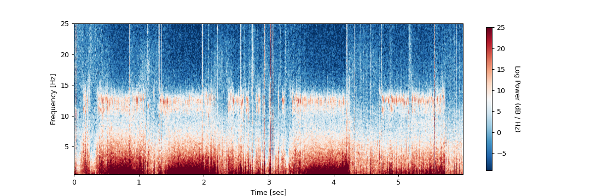
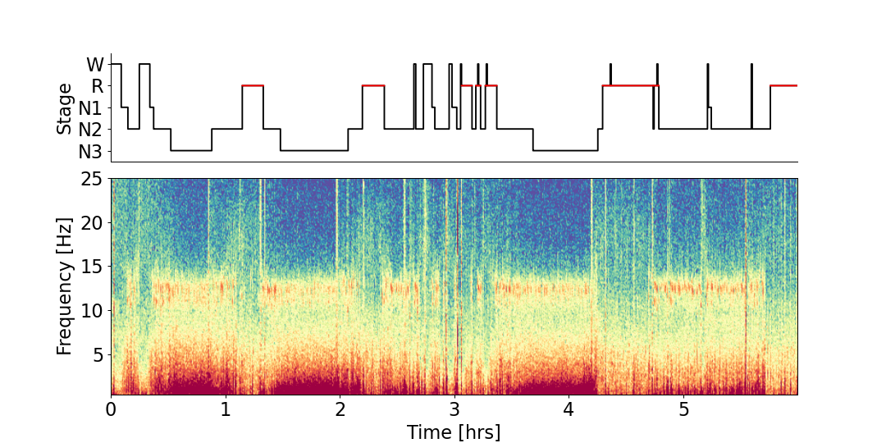

yasa.plot_spectrogram¶
-
yasa.plot_spectrogram(data, sf, hypno=None, win_sec=30, fmin=0.5, fmax=25, trimperc=2.5, cmap='RdBu_r')[source]¶ Plot a full-night multi-taper spectrogram, optionally with the hypnogram on top.
For more details, please refer to the Jupyter notebook
New in version 0.1.8.
- Parameters
- data
numpy.ndarray Single-channel EEG data. Must be a 1D NumPy array.
- sffloat
The sampling frequency of data AND the hypnogram.
- hypnoarray_like
Sleep stage (hypnogram), optional.
The hypnogram must have the exact same number of samples as
data. To upsample your hypnogram, please refer toyasa.hypno_upsample_to_data().Note
The default hypnogram format in YASA is a 1D integer vector where:
-2 = Unscored
-1 = Artefact / Movement
0 = Wake
1 = N1 sleep
2 = N2 sleep
3 = N3 sleep
4 = REM sleep
- win_secint or float
The length of the sliding window, in seconds, used for multitaper PSD calculation. Default is 30 seconds. Note that
datamust be at least twice longer thanwin_sec(e.g. 60 seconds).- fmin, fmaxint or float
The lower and upper frequency of the spectrogram. Default 0.5 to 25 Hz.
- trimpercint or float
The amount of data to trim on both ends of the distribution when normalizing the colormap. This parameter directly impacts the contrast of the spectrogram plot (higher values = higher contrast). Default is 2.5, meaning that the min and max of the colormap are defined as the 2.5 and 97.5 percentiles of the spectrogram.
- cmapstr
Colormap. Default to ‘RdBu_r’.
- data
- Returns
- fig
matplotlib.figure.Figure Matplotlib Figure
- fig
Examples
Full-night multitaper spectrogram on Cz, no hypnogram
>>> import yasa >>> import numpy as np >>> # In the next 5 lines, we're loading the data from GitHub. >>> import requests >>> from io import BytesIO >>> r = requests.get('https://github.com/raphaelvallat/yasa/raw/master/notebooks/data_full_6hrs_100Hz_Cz%2BFz%2BPz.npz', stream=True) >>> npz = np.load(BytesIO(r.raw.read())) >>> data = npz.get('data')[0, :] >>> sf = 100 >>> fig = yasa.plot_spectrogram(data, sf)
Full-night multitaper spectrogram on Cz with the hypnogram on top
>>> import yasa >>> import numpy as np >>> # In the next lines, we're loading the data from GitHub. >>> import requests >>> from io import BytesIO >>> r = requests.get('https://github.com/raphaelvallat/yasa/raw/master/notebooks/data_full_6hrs_100Hz_Cz%2BFz%2BPz.npz', stream=True) >>> npz = np.load(BytesIO(r.raw.read())) >>> data = npz.get('data')[0, :] >>> sf = 100 >>> # Load the 30-sec hypnogram and upsample to data >>> hypno = np.loadtxt('https://raw.githubusercontent.com/raphaelvallat/yasa/master/notebooks/data_full_6hrs_100Hz_hypno_30s.txt') >>> hypno = yasa.hypno_upsample_to_data(hypno, 1/30, data, sf) >>> fig = yasa.plot_spectrogram(data, sf, hypno, cmap='Spectral_r')
